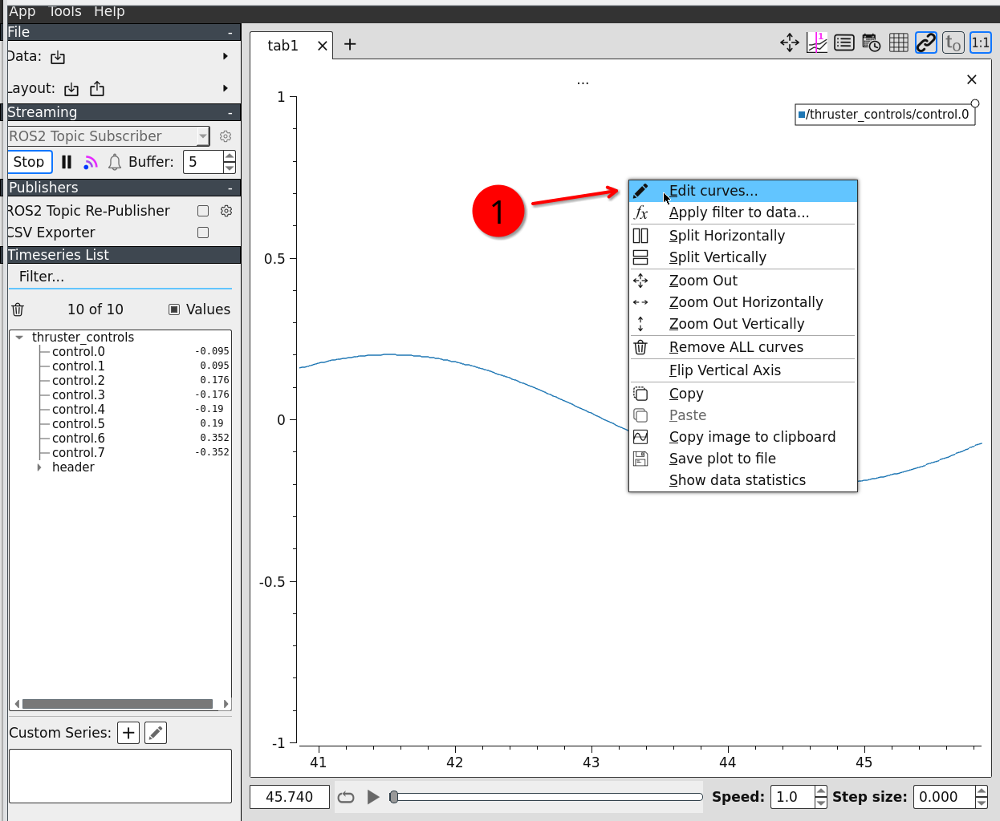

Real-Time Plotting
Plotting data is crucial for analyzing (and debugging…) your setup.
A very simple tool is rqt_plot.
However, rqt_plot is excrutiatingly annoying to use. Downsides are: you can only plot data over time and it’s very hard to configure, not ideal at all!
Therefore, we highly recommend you use plotjuggler.
To install plotjuggler, run
sudo apt install ros-$ROS_DISTRO-plotjuggler-ros
Now we can start plotjuggler
ros2 run plotjuggler plotjuggler
Getting Data In There
Make sure the ROS2 topic subscriber is selected
Choose an appropriate buffer length (seconds). Only data received during this timespan is plotted. Usually something between 30s and 60s. Set it to whatever you need.
Start
We need to select the topics we actually want to subscribe to. Subscribing everything might cause massive network traffic and CPU load.
Confirm
A list with our selected topics appears (if they are actually published).
If we have many topics, we might want to filter the list to find the data fields we want to plot.
Plotting is done by simply dragging the desired data field and dropping it on the plot area.
We did it! ü•≥
Adding Splits
Extremely useful feature!
Parametric Plots
We can do parametric plots by using the right mouse button instead of the left one when dragging the selected data fields onto the plot.
Multiple Tabs
Saving and Loading the Layout
We do not want to do all the configuration stuff over and over again if we have configured a neat plotting setup, do we?
Plotting Bagfile Data
Instead of streaming live data, we can also plot data stored in a bagfile. Really helpful to see what we actually have recorded (might differ from what we intented to record).
Scaling
There are only rare cases for which auto scaling the y axis is a good idea. So we better make sure we set some reasonable scaling ourselves.
Open the context menu with the right mouse button on the plot we want to configure and edit the curves.
Choose appropriate minimum and maximum values.
Confirm.
Removing Lines
The same menu as before: